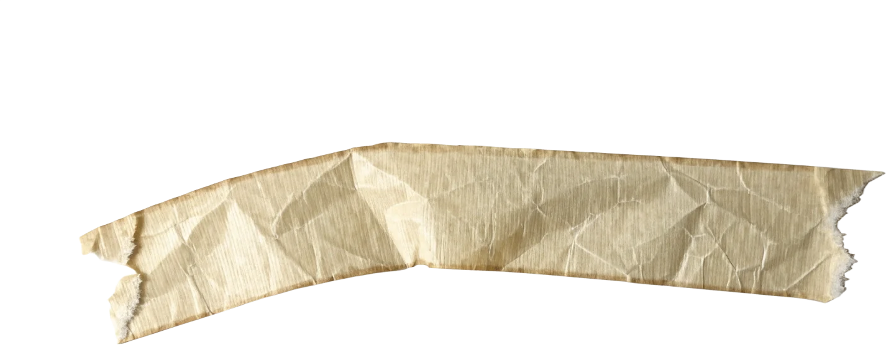

No. 03The marketing machine
The funnel hasn't sped up. It has moved inside the model.
conviction: all inFILED AT 4AM
THE POSITIONS
WHERE DID THE FUNNEL GO?
The funnel hasn't sped up. It has moved inside the model.
Six minutes into Omaha Beach, the plan was dead.
FILE 014 · FILED 04:12
Thirty things I think, and the essays that argue them.
← that's the whole talk
Spec only: see the README.

The funnel hasn't sped up. It has moved inside the model.
conviction: all inSpec only: see the README.
Spec only: see the README.
Spec only: see the README.
Spec only: see the README.